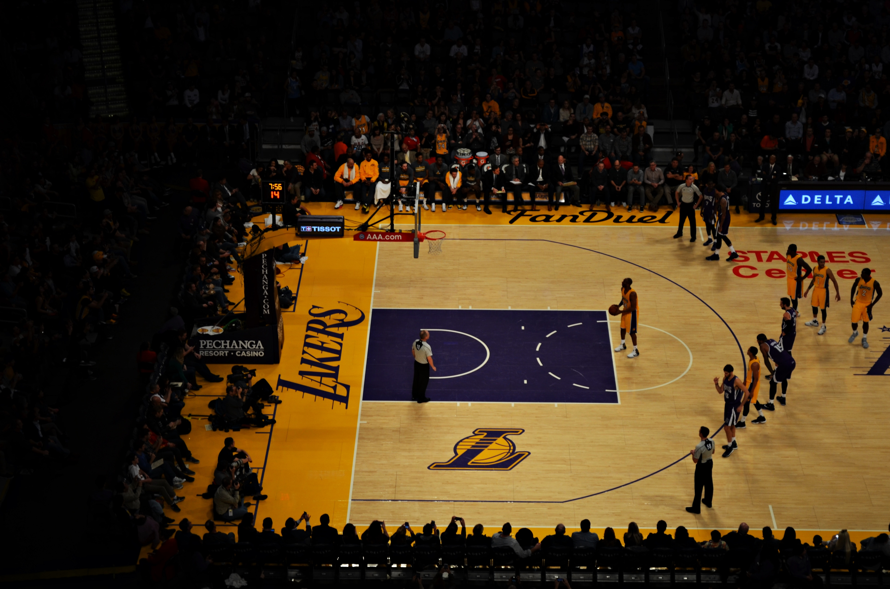

<div class="row">
  <div class="col-md-12 text">
    
    <strong> National Basketball Association (skrót ang. NBA)</strong> – amerykańsko-kanadyjska liga koszykarska, o
    charakterze profesjonalnym.
    Tworzy ją 30 zespołów, w tym: 29 ze Stanów Zjednoczonych i jeden z Kanady. Liga jest
    aktywnym członkiem USA Basketball, oddziału Fédération Internationale de Basketball na terytorium Stanów
    Zjednoczonych. Jej komisarzem
    od 1 lutego 2014 roku jest Adam Silver. NBA jest jedną z czterech największych północnoamerykańskich zawodowych lig
    sportowych (oprócz niej NFL, NHL i MLB). Gracze NBA są najlepiej opłacanymi sportowcami świata (w średniej rocznych
    zarobków).
    Liga została założona w Nowym Jorku 6 czerwca 1946 jako Basketball Association of America, a nazwę National
    Basketball Association przybrała jesienią 1949, po połączeniu z rywalizującą National Basketball League. Siedziba
    władz ligi, skąd dokonuje się wszystkich ruchów związanych z działalnością NBA, znajduje się na Piątej Alei 645 w
    Nowym
    Jorku. NBA Entertainment i studia NBA TV mieszczą się w pobliskim Secaucus w stanie New Jersey. -->
  </div>
</div>